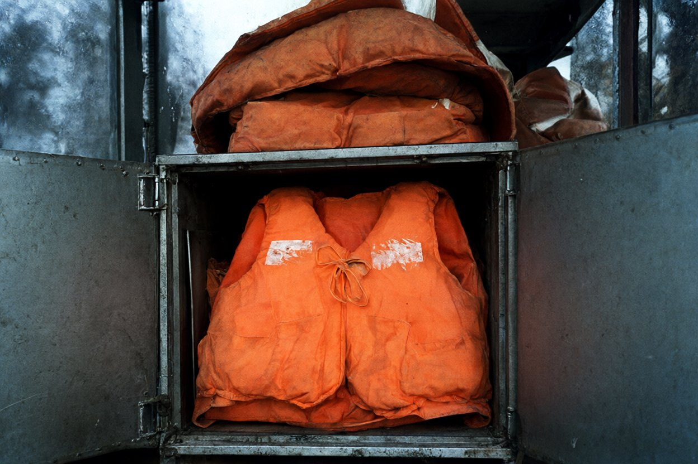
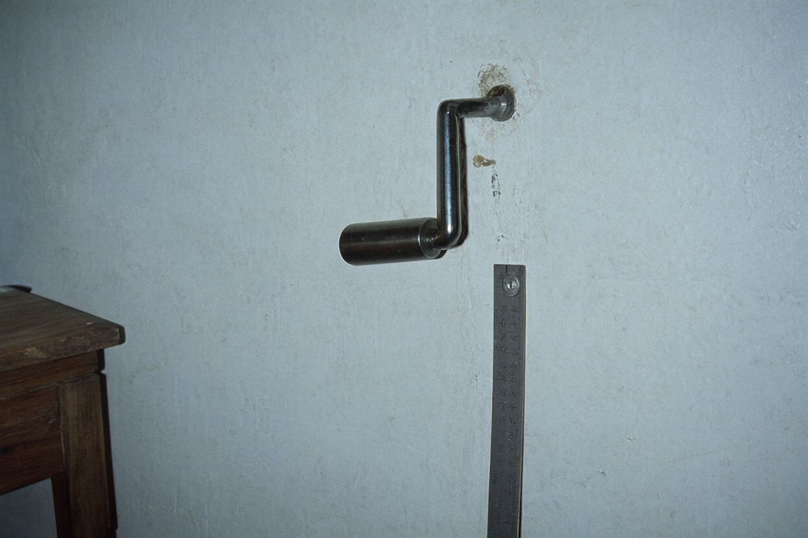

270011, м. Одеса, вул. Канатна, 22, оф. 5 · тел./факс (0482) 24-17-63
Справа № 98/117 «Ліман Стар»
Акт огляду № 47/98
повторного, маяка Вовча коса (дизельна, сарай, вахтове приміщення, настил)
Дата, час
27.11.1998, 11:00–13:00
Місце
маяк Вовча коса
Оглядали
аварійні комісари бюро (польова група № 2)
Присутні
начальник маяка Мартинюк Петро Гнатович; Бондар Оксана Петрівна (прибиральниця-сторож маяка)
Погода
хмарно, без опадів, вітер ПнЗх 4–5 м/с, +5°
Підстава
акт огляду № 41/98 від 24.11.1998, п. 7 (дизельна не оглядалась)
Оглядом встановлено
На прохання комісарів відчинити дизельну Мартинюк П. Г. дістав ключ із кишені фуфайки. Зі слів Мартинюка П. Г.: «Думав, у майстра, а він у кишені фуфайки».
Дизельна: резервний дизель-генератор, накритий брезентом; бочка з паливом; на полиці — гасові лампи (5 шт.). Біля північної стіни — металева шафа на дві дверцята, не замикається. Фото 1.
На шафі, складені стосом, — три списані рятувальні жилети маяка, вицвілі, з трафаретом «МАЯК ВК». Під ними, у шафі, на дні — помаранчевий рятувальний жилет із білим трафаретом на грудях «LIMAN STAR».
зав'язки жилета цілі, зав'язані бантиком;
тканина зсередини суха; зовні — сліди висохлої солоної води (білі розводи);
піску, водоростей, черепашника на жилеті й у шафі не виявлено.
Зі слів Мартинюка П. Г.: «Моряки покидали в сінях, я відніс сюди». Жилет сфотографовано й залишено в шафі.
Вахтове приміщення башти. Рукоятка заводу механізму — на гвіздку біля стола. Рукоятка вимита; на руків'ї — дрібні свіжі подряпини. У квадратному гнізді осі і в місці з'єднання руків'я з віссю — темно-бурий наліт. Рукоятку бюро не вилучало; рекомендовано передати в Очаківський РВ міліції. Фото 2.
Сарай. Двоколісний залізний візок; у візку — вугілля. У ступицях обох коліс — свіжий пісок із черепашником. Від сараю до дверей башти — двір (утрамбований ґрунт), від дверей башти до причалу — дощатий настил (див. акт № 41/98).
Настил, причал, пляж напроти кінця настилу оглянуто — предметів і слідів, що стосуються справи, не виявлено.
Перевірка телефонного зв'язку. О 12:40 з апарата у вахтовому приміщенні башти (лінія 2-17) здійснено дзвінок у бюро «Аварком-Південь» (0482) 24-17-63, тривалість 2 хв. Секретар бюро Мельничук З. підтвердила, що в трубці чути рівне клацання механізму.
1
Фототаблиця до акта огляду № 47/98 від 27.11.1998

LIMAN
STAR
Фото 1. Дизельна. Металева шафа: на шафі — списані жилети маяка, у шафі на дні — жилет із трафаретом «LIMAN STAR», зав'язки зав'язані.

Фото 2. Рукоятка заводу механізму на гвіздку у вахтовому приміщенні (повторно, 27.11). Поруч — лінійка 30 см.